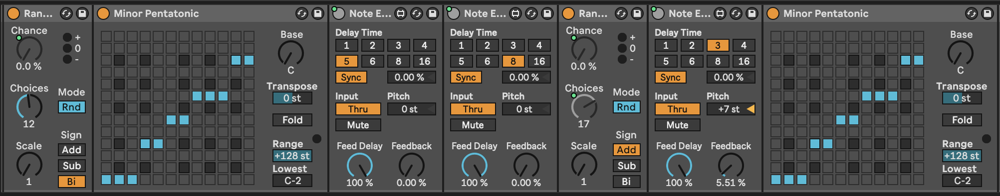

11 Recipe - Doing more with less using MIDI tools and plugins
Create a MIDI track but do not add an instrument to that track. This is going to be the “generator” for our track.
Within this track, add a single MIDI clip with C3 notes for one bar. Name this the “Generator” track (CTRL+R to rename).
Add MIDI tracks and assign the input for these tracks to be the “Generator” track that you have just created above. In the example below I’ve added a short, plucky sound in the Operator track, a Wavetable pad, and a track with the Electric piano sound. The Wavetable track has a compressor on it which has a sidechain setting taking in the 808 Kick sound. The 808 kick channel is muted so it is not heard in the mix, but the compressor can pick up this audio to sidechain the wavetable pad and add rhythm. The second Wavetable instrument “Wavetable pre-compressor” is taking the output from the Wavetable instrument but set to “Pre-FX” - before the ducking compression is applied. The audio from this track goes only to the Return FX, so essentially we get a nice pad sound, but we never hear the dry sound.
-
In your tracks, you can add MIDI plugins to alter the incoming chord. For example:
You can employ all kinds of MIDI FX here. In this example I have grouped these FX into a MIDI Effect Rack and I’m using Macros to allow me to switch on and change various FX parameters from a single set of 8 knobs.
The “Random” effect is going to add (or subtract) semitone shift to the incoming note. Remember that our generator is a single C3 note for one bar. We then quantise this randomness to the C minor pentatonic scale using the “Scale” plugin.
Then we have two distinct “Note Echo” plugins which are going to echo the incoming note at 5 beats and 8 beats delay. Each plugin has the “Thru” setting switched on so we’ll hear the original note and its delay. You can experiment with setting this to “Mute” to mute the incoming note, and just play the delayed version. The device on/off switch on the top left of the device is mapped to a macro knob which allows me to switch these devices on and off with a knob or button on my MIDI controller.
The second “Random” plugin adds more randomness to the original note, and all of the delayed / echo output MIDI notes. This allows me to add a little more variation to the output by turning up the “Chance” setting on this device. Note that the “Choices” knob is also mapped to a macro knob, so I can dial up more or less variation.
A third “Note Echo” has a 3 beat delay with a Pitch shift up 7 semitones but with very low Feedback setting so that the pitching up fades quickly. Again, device on/off is mapped to a controller knob or button to allow me to turn this on and off.
Finally a “Scale” device ensures that all this chaos is quantised to a C minor scale.
These are just examples of what you could do, but the concept here is that the generating device can be as simple as you like - a single MIDI note lasting one bar in this case - but these devices then allow you to create a cascade of evolving MIDI note information all within the C minor pentatonic scale. Mapping to MIDI controllers allows me to dial up and back the amount of variation during the track. -
In the screen shot above, you may notice that my MIDI Generator track is actually Grouped tracks. Let’s recreate that now. Create a new MIDI track called “Note length” and another called “Arp”. In each of these tracks, set the MIDI input to Track one (the single note C3 track) and set Monitor to “In”.

In the “Note Length” track, add a MIDI Note Length MIDI effect. This will be used to take the output from Track 1 “MIDI Note” and stretch out the MIDI notes to last a nominated number of seconds.
In the “Arp” track we’re going to add an Arpeggiator plugin (surprise!) but also another MIDI “Note Length” effect with which we can tweak the note length of the output from the Arpeggiator to suite taste, and a Velocity plugin to add a little variation to the velocity of the output MIDI notes.
Tweaking the Length and Gate settings of “Note Length” will allow us to alter the sound of what is generated from the “Arpeggiator” plugin - note that the Gate setting in the “Arpeggiator” does this as well, but we could potentially map these parameters to a MIDI controller if we wanted to vary the arpeggiator sound coming from this track.
From the MIDI routing screen capture above you can see that we send the MIDI output from the “Note Length” track to the input of the Wavetable pad sound (to give us a nice long chords to play with in Wavetable) while the output of the “Arp” track is being sent to the Electric Piano sound.
In performance of this track, I use a MIDI Controller to change settings of the MIDI Effect Rack in the MIDI note track, which essentially is using me (the human in charge) to dictate HOW MUCH generative randomness happens, but the MIDI effects in the “Note Length” and “Arp” tracks ingest this chaos and make some things happen downstream across a variety of instruments and sounds. I then use the controller to fade up and down the volume of each of the instrument tracks to allow me to shape the overall emerging track so that all sounds aren’t playing all the time.
-
We have mostly been looking at MIDI NOTE plugins here. But there’s a much overlooked MIDI plugin called “Expression control” which allows you to map various MIDI incoming signals to ANY parameter in Live, including controls of other plugins. In the example below we’ve mapped various parameters to controls in the Operator instrument just for illustration.

Sure, instruments like Operator and Wavetable have the ability to vary many different parameters using MIDI information, but notice how each of the MIDI parameters on the left hand side has a drop-down menu option. Let’s look at what we can do…

There’s a wide variety of incoming MIDI inputs which can then be used to map to plugin controls, as well as a “random” input which will select a new value for every MIDI input note, and “incremental” which will increment values for every MIDI input note.
Also note that the plugin allows you to specify Min and Max levels for each of these - for example the Random input is mapped to Tone in Operator, but the range is limited between 55% and 75% of the values. This kind of constraint can add nice variations in timbre for each note without it sounding too jarring.
Using MIDI “Expression Control” can be useful to modify a variety of parameters in Ableton including some that aren’t easily mapped within an instrument. The basic concept in this recipe - and one that I use frequently - is to take one MIDI part and make the most of it. Using MIDI plugins like this can ensure that the resulting sounds are related to the input, without having to be exactly the same. Anything you can do to delay, alter, spread out, harmonise and alter the incoming MIDI will add interest to the part. Using these MIDI parts with different instrument parts / sounds and audio effects will add variety and interest.
Because I’m using lots of MIDI “Note Echo” plugins here, the generating input needs to relatively simple - here just a single MIDI note that lasts one bar. If the generating MIDI clip was more busy then I’m sure this would descend into a mess fairly quickly. But the principle extends to other kinds of inputs if you pick and choose the MIDI effects that you apply to it.
The benefit of this approach is that because MIDI effects are altering the inputs, all of the MIDI tracks generated are related to each other and cohesive in their sound, without being THE SAME. This is a key attribute, because we can then use these MIDI tracks across different instruments with different timbres.Press play. Sit back and relax.
You can hear one instance of this track here: https://soundcloud.com/mikeksmith/single-note-input
(I say “one instance” because this is generative and uses probability. So the next time I render the track it could well sound different. Similar, but different.)